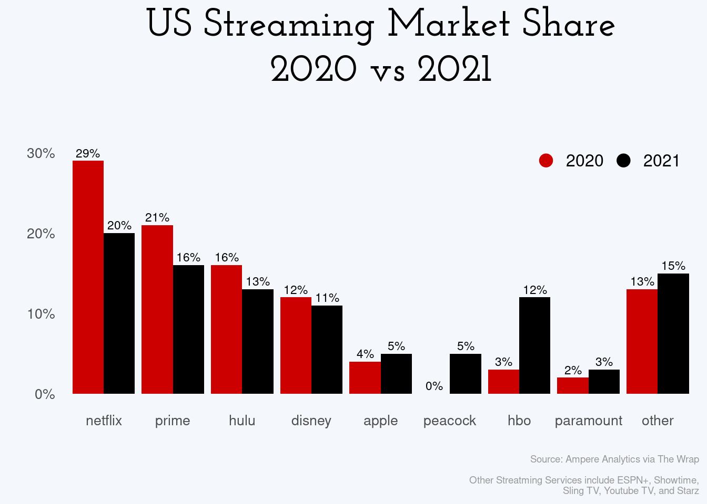
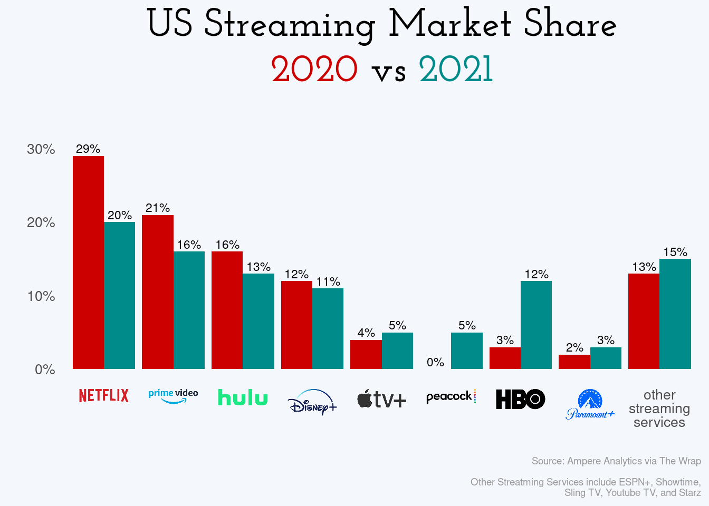
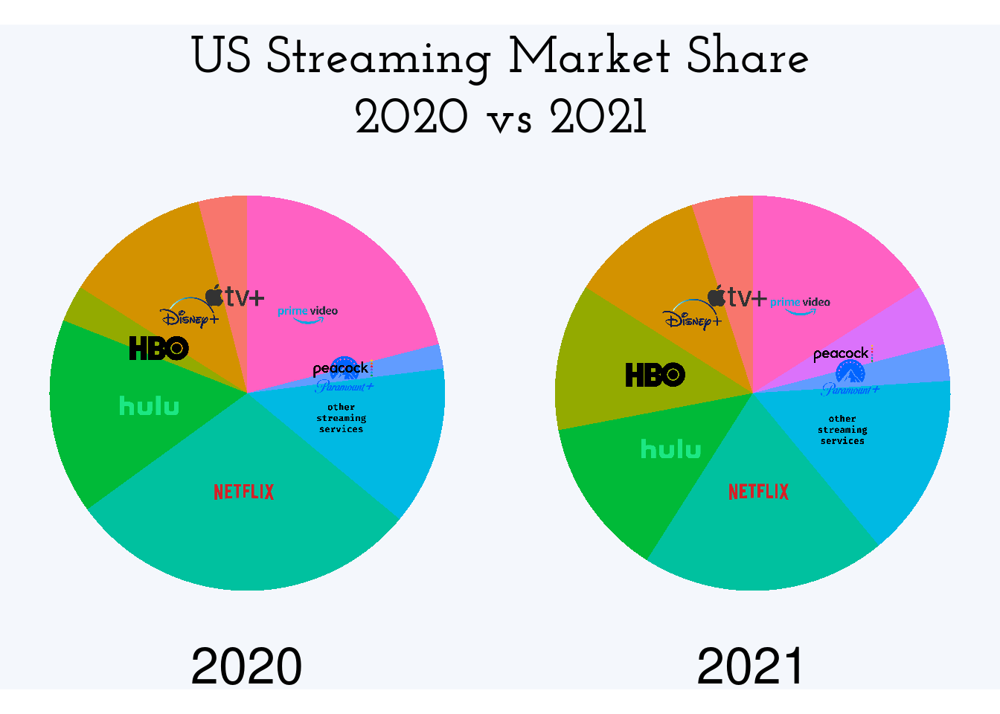
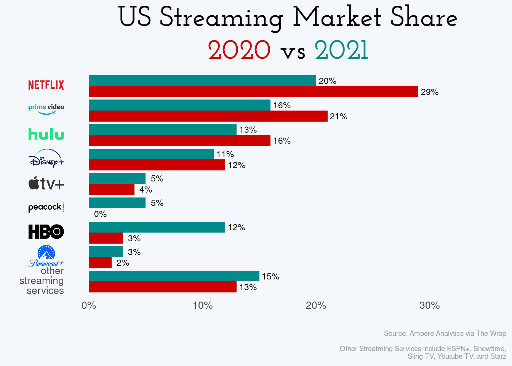
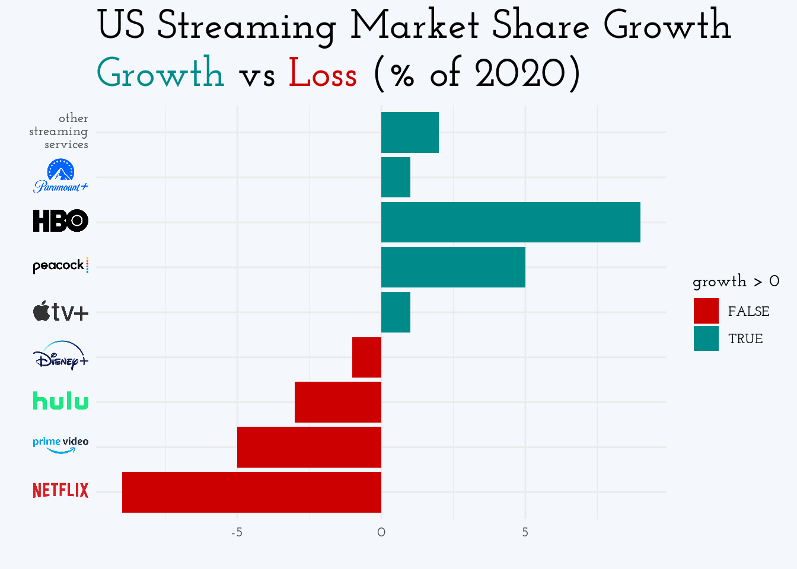
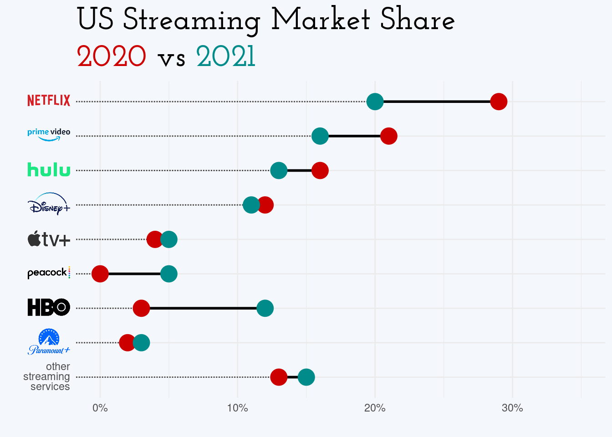
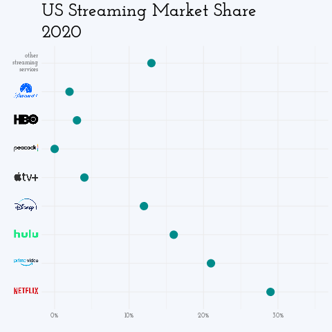

US Streaming Services Market Share, 2020 vs 2021
I saw this post on Reddit’s r/dataisbeautiful showing this plot of streaming services market share, comparing 2020 to 2021
US Streaming Services Market Share, 2020 vs 2021
and thought it looked like a good candidate for trying out some plot improvement techniques.
I saw this post on Reddit’s r/dataisbeautiful showing this plot of streaming services market share, comparing 2020 to 2021
US Streaming Services Market Share, 2020 vs 2021
and thought it looked like a good candidate for trying out some plot improvement techniques.
Yes, that was a reasonably long while ago, this post has taken quite some time to put together. Life.
I’ve played with adding images to plot axes several times (also here, here, here) so that part shouldn’t pose too much of a challenge. First, I’ll try to rebuild the original. The original was built in powerpoint but I’ll be reproducing it with R (surprise, surprise).
The data itself appears to be captured from something like this page (paywalled) but the precise values aren’t important; I’ll just take them directly from the original plot manually
streaming <- tibble::tribble(
~service, ~`2020`, ~`2021`,
"netflix", 29, 20,
"prime", 21, 16,
"hulu", 16, 13,
"disney", 12, 11,
"apple", 4, 5,
"peacock", 0, 5,
"hbo", 3, 12,
"paramount", 2, 3,
"other", 13, 15,
)I can build a simple barplot from this data with {ggplot2}. First we’ll need it in long format, with the services ordered as
they are in the original. From that I can build a basic bar plot with dodged bars. There’s a few fiddly bits to work out, which I’ll try to
go through with code comments.
library(ggplot2)
## pivot to long format with the
## year and share as their own columns
streaming_long <- tidyr::pivot_longer(streaming,
cols = -service,
names_to = "year",
values_to = "share")
## plot the years side-by-side in the original order
p <- ggplot(streaming_long) +
geom_col(aes(factor(service, levels = streaming$service),
share, fill = year), position = position_dodge(width = 0.9)) +
## add a hidden set of points to make the legend circles easily
geom_point(aes(x = service, y = -10, color = year, fill = year), size = 4) +
## add the percentages just above each bar
geom_text(aes(service, share + 1, label = paste0(share, "%"), group = year),
position = position_dodge(width = 0.9), size = 3) +
## use similar colours to the original
scale_fill_manual(values = c(`2020` = "red3", `2021` = "black")) +
scale_color_manual(values = c(`2020` = "red3", `2021` = "black")) +
## hide the fill legend and make the color legend horizontal
guides(fill = "none", color = guide_legend(direction = "horizontal")) +
scale_y_continuous(labels = scales::percent_format(scale = 1),
limits = c(0, 35)) +
labs(title = "US Streaming Market Share",
subtitle = "2020 vs 2021",
caption = "Source: Ampere Analytics via The Wrap
Other Streatming Services include ESPN+, Showtime,
Sling TV, Youtube TV, and Starz",
x = "", y = "") +
theme_minimal() +
theme(axis.text = element_text(size = 10),
plot.title = element_text(size = 28, hjust= 0.5),
plot.subtitle = element_text(size = 28, hjust = 0.5),
plot.caption = element_text(size = 7, color = "grey60"),
plot.background = element_rect(fill = "#f4f7fc", size = 0),
legend.title = element_blank(),
legend.text= element_text(size = 12),
panel.grid = element_blank(),
## move the color legend to an inset
legend.position = c(0.85, 0.8))
p## Warning: Removed 18 rows containing missing values (geom_point).Not bad. Let’s get some of the other elements looking right. I used a font identifying site to pick a similar font which seems to be Josefin Slab SemiBold.
library(extrafont)
fontfamily <- "Josefin Slab SemiBold"
p <- p + theme(plot.title = element_text(family = fontfamily),
plot.subtitle = element_text(family = fontfamily))
p## Warning: Removed 18 rows containing missing values (geom_point). That’s fairly close. For the logos I’ll use the versions on Wikipedia
wiki <- "https://upload.wikimedia.org/wikipedia/commons/thumb/"
logos <- tibble::tribble(
~service, ~logo,
"netflix", paste0(wiki, "0/08/Netflix_2015_logo.svg/340px-Netflix_2015_logo.svg.png"),
"prime", paste0(wiki, "1/11/Amazon_Prime_Video_logo.svg/450px-Amazon_Prime_Video_logo.svg.png"),
"hulu", paste0(wiki, "e/e4/Hulu_Logo.svg/440px-Hulu_Logo.svg.png"),
"disney", paste0(wiki, "3/3e/Disney%2B_logo.svg/320px-Disney%2B_logo.svg.png"),
"apple", paste0(wiki, "2/28/Apple_TV_Plus_Logo.svg/500px-Apple_TV_Plus_Logo.svg.png"),
"peacock", paste0(wiki, "d/d3/NBCUniversal_Peacock_Logo.svg/440px-NBCUniversal_Peacock_Logo.svg.png"),
"hbo", paste0(wiki, "d/de/HBO_logo.svg/440px-HBO_logo.svg.png"),
"paramount", paste0(wiki, "a/a5/Paramount_Plus.svg/440px-Paramount_Plus.svg.png"),
"other", "other.png"
) %>%
mutate(path = file.path("images", paste(service, tools::file_ext(logo), sep = ".")))
labels <- setNames(paste0("<img src='", logos$path, "' width='35' />"), logos$service)
labels[["other"]] <- "other<br />streaming<br />services"and save a local copy for faster loading/just in case
for (r in 1:8) {
download.file(logos$logo[r], logos$path[r])
}I can leverage {ggtext} to set these as the axis labels
p <- p +
scale_x_discrete(labels = labels) +
theme(axis.text.x = ggtext::element_markdown())
p## Warning: Removed 18 rows containing missing values (geom_point).That’s not too bad - for the sake of scrolling, here’s the original again
US Streaming Services Market Share, 2020 vs 2021
Now to try to improve it.
My first thought on seeing this plot with the legend was that {ggtext} makes this a lot easier to read by using the
title as the legend. For the sake of the ‘removed rows containing missing values’ warning I’ll also drop the points layer
p$layers[[2]] <- NULL ## drop the geom_points layer
p <- p +
labs(subtitle = "<span style = 'color: red3;'>2020</span> vs 2021") +
theme(plot.subtitle = ggtext::element_markdown(), legend.position = "none")
p To help make the black bars more distinct from the text, we could make these a different colour
To help make the black bars more distinct from the text, we could make these a different colour
p <- p +
scale_fill_manual(values = c(`2020` = "red3", `2021` = "darkcyan")) +
labs(subtitle = paste0("<span style = 'color: red3;'>2020</span> ",
"vs <span style = 'color: darkcyan;'>2021</span>")) +
theme(plot.subtitle = ggtext::element_markdown(), legend.position = "none")## Scale for 'fill' is already present. Adding another scale for 'fill', which
## will replace the existing scale.p Now to see if there’s a better way to represent this data. These are fractions of the total share… would a pie chart be a candidate?
streaming_pie <- left_join(streaming_long, logos, by = "service")
p_pie <- ggplot(streaming_pie, aes(1, share, fill = service, image = path)) +
geom_col() +
coord_polar("y") +
ggimage::geom_image(size = 0.12, position = position_stack(vjust = 0.5)) +
facet_wrap(~year, strip.position = "bottom") +
guides(fill = "none", color = guide_legend(direction = "horizontal")) +
labs(title = "US Streaming Market Share", subtitle = "2020 vs 2021", x = "", y = "") +
theme_void() +
theme(text = element_text(size = 32),
plot.title = element_text(family = fontfamily, size = 26, hjust = 0.5),
plot.subtitle = element_text(family = fontfamily, size = 26, hjust = 0.5),
plot.background = element_rect(fill = "#f4f7fc", size = 0),
legend.title = element_blank())
p_pie No, that’s harder for making comparisons. Forget that idea.
This should possibly be a horizontal bar plot so that the labels read nicely
p +
coord_flip() +
scale_x_discrete(labels = labels, limits = rev(streaming$service)) +
theme(axis.text.y = ggtext::element_markdown())## Scale for 'x' is already present. Adding another scale for 'x', which will
## replace the existing scale. The ‘insight’ this is trying to display is how each service’s share has grown or shrunk. It wasn’t obvious to me that the original was ordered by that - decreases shown first, then increases (in some order, I’m still not sure what). What might make for a better plot to center it on the 2020 share and show the growth (positive or negative)
streaming_delta <- dplyr::mutate(streaming, growth = `2021` - `2020`)
p <- ggplot(streaming_delta) +
geom_col(aes(factor(service, levels = streaming$service), growth, fill = growth > 0)) +
labs(title = "US Streaming Market Share Growth", x = "", y = "") +
theme_minimal() +
theme(text = element_text(family = fontfamily),
plot.title = element_text(size = 26),
plot.subtitle = element_text(size = 26)) +
scale_x_discrete(labels = labels) +
coord_flip() +
theme(axis.text.y = ggtext::element_markdown()) +
scale_fill_manual(values = c(`TRUE` = "darkcyan", `FALSE` = "red3")) +
labs(subtitle = paste0("<span style = 'color: darkcyan;'>Growth</span> ",
"vs <span style = 'color: red3;'>Loss</span> (% of 2020)")) +
theme(plot.subtitle = ggtext::element_markdown(),
plot.background = element_rect(fill = "#f4f7fc", size = 0))
p Each comparison in the original required two bars, and the separation between the services didn’t make that easy to read. In this version, the absolute scale is lost (services starting high and decreasing aren’t so distinct from those starting low and gaining slightly) so what about using a dumbbell plot to show the separation between the two values while retaining their overall scales, rather than relying on comparing two bars?
library(ggalt, include.only = "geom_dumbbell")
p <- ggplot(streaming) +
ggalt::geom_dumbbell(aes(factor(service, levels = rev(streaming$service)),
x = `2020`, xend = `2021`),
colour_x = "red3", size_x = 6,
colour_xend = "darkcyan", size_xend = 6,
size = 1, dot_guide = TRUE,
dot_guide_size = 0.5,
dot_guide_colour = "grey25") +
scale_x_continuous(labels = scales::percent_format(scale = 1),
limits = c(0, 35)) +
scale_y_discrete(labels = labels) +
labs(title = "US Streaming Market Share", x = "", y = "") +
labs(subtitle = paste0("<span style = 'color: red3;'>2020</span> ",
"vs <span style = 'color: darkcyan;'>2021</span>")) +
theme_minimal() +
theme(plot.title = element_text(family = fontfamily, size = 26),
plot.subtitle = element_text(family = fontfamily, size = 26)) +
theme(axis.text.y = ggtext::element_markdown(),
plot.subtitle = ggtext::element_markdown(),
plot.background = element_rect(fill = "#f4f7fc", size = 0),
legend.position = "none")
p## Warning: Use of `streaming$service` is discouraged. Use `service` instead. One last option to bring this data to life would be to animate between the two states…
library(gganimate)
p <- ggplot(streaming_long) +
geom_point(aes(share,
factor(service, levels = streaming$service)),
size = 5, color = "darkcyan") +
scale_y_discrete(labels = labels) +
labs(title = "US Streaming Market Share", x = "", y = "") +
labs(subtitle = "{closest_state}") +
scale_x_continuous(labels = scales::percent_format(scale = 1),
limits = c(0, 35)) +
theme_minimal() +
theme(text = element_text(family = fontfamily),
plot.title = element_text(size = 26),
plot.subtitle = element_text(size = 26),
legend.position = "none") +
theme(axis.text.y = ggtext::element_markdown(),
plot.background = element_rect(fill = "#f4f7fc", size = 0))
anim <- p +
transition_states(year, transition_length = 4) +
ease_aes() +
enter_fade() +
exit_fade()
animate(anim, renderer = gifski_renderer())
anim_save(filename = "images/streaming.gif") I think these last few communicate more than the original. It’s always amazing how easy it is to bring this data into R and start playing with different presentations. Sure, perfecting the plots can take a little while, but the data is there to be played with.
One visualization which might have been interesting would be if we had the data on the transitions between services. Then an alluvial plot would be very informative. Simulating that…
streaming_flow <- tibble::tribble(
~`2020`, ~Freq, ~`2021`,
"netflix", 12, "netflix",
"netflix", 4, "prime",
"netflix", 6, "disney",
"netflix", 3, "apple",
"netflix", 4, "hbo",
"prime", 16, "prime",
"prime", 5, "netflix",
"prime", 2, "hulu",
"prime", 1, "disney",
"prime", 3, "peacock",
"prime", 4, "hbo",
"hulu", 13, "hulu",
"hulu", 1, "netflix",
"hulu", 2, "prime",
"hulu", 1, "disney",
"disney", 11, "disney",
"disney", 1, "netflix",
"disney", 3, "prime",
"disney", 1, "hulu",
"apple", 4, "apple",
"apple", 2, "netflix",
"apple", 1, "prime",
"peacock", 2, "peacock",
"peacock", 1, "netflix",
"hbo", 3, "hbo",
"hbo", 1, "prime"
)
library(ggalluvial)
lodes <- to_lodes_form(streaming_flow, axes = c("2020", "2021"))
lodes <- left_join(lodes, logos, by = c("stratum" = "service"))
lodes <- arrange(lodes, stratum)
ggplot(lodes, aes(x = x, stratum = stratum, alluvium = alluvium,
y = Freq, fill = stratum, label = stratum, image = path)) +
geom_flow() +
geom_stratum(alpha = 0.6) +
geom_text(stat = "stratum", size = 4) +
scale_x_discrete(limits = c("2020", "2021"),
expand = c(0.1, 0.1)) +
labs(title = " US Streaming Market Share Flow",
subtitle = " 2020 to 2021") +
theme_void() +
theme(axis.text.x = element_text(size = 20, vjust = 3),
plot.title = element_text(family = fontfamily, size = 26),
plot.subtitle = element_text(family = fontfamily, size = 26),
plot.background = element_rect(fill = "#f4f7fc", size = 0),
legend.position = "none")  I spent way too long trying to get the logos into this one, but there seems to be
a fundamental issue with combining
I spent way too long trying to get the logos into this one, but there seems to be
a fundamental issue with combining {ggalluvial} with {ggimage} which I coulnd’t resolve.
Do you have a better way to present this data? Let me know in the comments or on Twitter.
## ─ Session info ───────────────────────────────────────────────────────────────
## setting value
## version R version 4.0.3 (2020-10-10)
## os Pop!_OS 20.10
## system x86_64, linux-gnu
## ui X11
## language en_AU:en
## collate en_AU.UTF-8
## ctype en_AU.UTF-8
## tz Australia/Adelaide
## date 2021-07-02
##
## ─ Packages ───────────────────────────────────────────────────────────────────
## package * version date lib source
## ash 1.0-15 2015-09-01 [1] CRAN (R 4.0.3)
## assertthat 0.2.1 2019-03-21 [1] CRAN (R 4.0.3)
## BiocManager 1.30.12 2021-03-28 [1] CRAN (R 4.0.3)
## blogdown 1.2 2021-03-04 [1] CRAN (R 4.0.3)
## bookdown 0.21 2020-10-13 [1] CRAN (R 4.0.3)
## callr 3.5.1 2020-10-13 [1] CRAN (R 4.0.3)
## cli 2.2.0 2020-11-20 [1] CRAN (R 4.0.3)
## colorspace 2.0-0 2020-11-11 [1] CRAN (R 4.0.3)
## crayon 1.3.4 2017-09-16 [1] CRAN (R 4.0.3)
## desc 1.2.0 2018-05-01 [1] CRAN (R 4.0.3)
## devtools 2.3.2 2020-09-18 [1] CRAN (R 4.0.3)
## digest 0.6.27 2020-10-24 [1] CRAN (R 4.0.3)
## dplyr * 1.0.2 2020-08-18 [1] CRAN (R 4.0.3)
## ellipsis 0.3.1 2020-05-15 [1] CRAN (R 4.0.3)
## evaluate 0.14 2019-05-28 [1] CRAN (R 4.0.3)
## extrafont * 0.17 2014-12-08 [1] CRAN (R 4.0.3)
## extrafontdb 1.0 2012-06-11 [1] CRAN (R 4.0.3)
## fansi 0.4.1 2020-01-08 [1] CRAN (R 4.0.3)
## farver 2.0.3 2020-01-16 [1] CRAN (R 4.0.3)
## fs 1.5.0 2020-07-31 [1] CRAN (R 4.0.3)
## generics 0.1.0 2020-10-31 [1] CRAN (R 4.0.3)
## ggalluvial * 0.12.3 2020-12-05 [1] CRAN (R 4.0.3)
## ggalt * 0.4.0 2017-02-15 [1] CRAN (R 4.0.3)
## gganimate * 1.0.7 2020-10-15 [1] CRAN (R 4.0.3)
## ggimage * 0.2.8 2020-04-02 [1] CRAN (R 4.0.3)
## ggplot2 * 3.3.3 2020-12-30 [1] CRAN (R 4.0.3)
## ggplotify 0.0.7 2021-05-11 [1] CRAN (R 4.0.3)
## ggtext 0.1.1 2020-12-17 [1] CRAN (R 4.0.3)
## gifski 1.4.3-1 2021-05-02 [1] CRAN (R 4.0.3)
## glue 1.4.2 2020-08-27 [1] CRAN (R 4.0.3)
## gridGraphics 0.5-1 2020-12-13 [1] CRAN (R 4.0.3)
## gridtext 0.1.4 2020-12-10 [1] CRAN (R 4.0.3)
## gtable 0.3.0 2019-03-25 [1] CRAN (R 4.0.3)
## hms 0.5.3 2020-01-08 [1] CRAN (R 4.0.3)
## htmltools 0.5.0 2020-06-16 [1] CRAN (R 4.0.3)
## jsonlite 1.7.2 2020-12-09 [1] CRAN (R 4.0.3)
## KernSmooth 2.23-18 2020-10-29 [4] CRAN (R 4.0.3)
## knitr 1.30 2020-09-22 [1] CRAN (R 4.0.3)
## labeling 0.4.2 2020-10-20 [1] CRAN (R 4.0.3)
## lifecycle 0.2.0 2020-03-06 [1] CRAN (R 4.0.3)
## magick 2.6.0 2021-01-13 [1] CRAN (R 4.0.3)
## magrittr 2.0.1 2020-11-17 [1] CRAN (R 4.0.3)
## maps 3.3.0 2018-04-03 [1] CRAN (R 4.0.3)
## markdown 1.1 2019-08-07 [1] CRAN (R 4.0.3)
## MASS 7.3-53 2020-09-09 [4] CRAN (R 4.0.2)
## memoise 1.1.0 2017-04-21 [1] CRAN (R 4.0.3)
## munsell 0.5.0 2018-06-12 [1] CRAN (R 4.0.3)
## pillar 1.4.7 2020-11-20 [1] CRAN (R 4.0.3)
## pkgbuild 1.2.0 2020-12-15 [1] CRAN (R 4.0.3)
## pkgconfig 2.0.3 2019-09-22 [1] CRAN (R 4.0.3)
## pkgload 1.1.0 2020-05-29 [1] CRAN (R 4.0.3)
## png 0.1-7 2013-12-03 [1] CRAN (R 4.0.3)
## prettyunits 1.1.1 2020-01-24 [1] CRAN (R 4.0.3)
## processx 3.4.5 2020-11-30 [1] CRAN (R 4.0.3)
## progress 1.2.2 2019-05-16 [1] CRAN (R 4.0.3)
## proj4 1.0-10.1 2021-01-26 [1] CRAN (R 4.0.3)
## ps 1.5.0 2020-12-05 [1] CRAN (R 4.0.3)
## purrr 0.3.4 2020-04-17 [1] CRAN (R 4.0.3)
## R6 2.5.0 2020-10-28 [1] CRAN (R 4.0.3)
## RColorBrewer 1.1-2 2014-12-07 [1] CRAN (R 4.0.3)
## Rcpp 1.0.5 2020-07-06 [1] CRAN (R 4.0.3)
## remotes 2.2.0 2020-07-21 [1] CRAN (R 4.0.3)
## rlang 0.4.10 2020-12-30 [1] CRAN (R 4.0.3)
## rmarkdown 2.6 2020-12-14 [1] CRAN (R 4.0.3)
## rprojroot 2.0.2 2020-11-15 [1] CRAN (R 4.0.3)
## Rttf2pt1 1.3.8 2020-01-10 [1] CRAN (R 4.0.3)
## rvcheck 0.1.8 2020-03-01 [1] CRAN (R 4.0.3)
## scales 1.1.1 2020-05-11 [1] CRAN (R 4.0.3)
## sessioninfo 1.1.1 2018-11-05 [1] CRAN (R 4.0.3)
## stringi 1.5.3 2020-09-09 [1] CRAN (R 4.0.3)
## stringr 1.4.0 2019-02-10 [1] CRAN (R 4.0.3)
## testthat 3.0.1 2020-12-17 [1] CRAN (R 4.0.3)
## tibble 3.0.4 2020-10-12 [1] CRAN (R 4.0.3)
## tidyr 1.1.2 2020-08-27 [1] CRAN (R 4.0.3)
## tidyselect 1.1.0 2020-05-11 [1] CRAN (R 4.0.3)
## tweenr 1.0.2 2021-03-23 [1] CRAN (R 4.0.3)
## usethis 2.0.0 2020-12-10 [1] CRAN (R 4.0.3)
## vctrs 0.3.6 2020-12-17 [1] CRAN (R 4.0.3)
## withr 2.3.0 2020-09-22 [1] CRAN (R 4.0.3)
## xfun 0.22 2021-03-11 [1] CRAN (R 4.0.3)
## xml2 1.3.2 2020-04-23 [1] CRAN (R 4.0.3)
## yaml 2.2.1 2020-02-01 [1] CRAN (R 4.0.3)
##
## [1] /home/jono/R/x86_64-pc-linux-gnu-library/4.0
## [2] /usr/local/lib/R/site-library
## [3] /usr/lib/R/site-library
## [4] /usr/lib/R/library